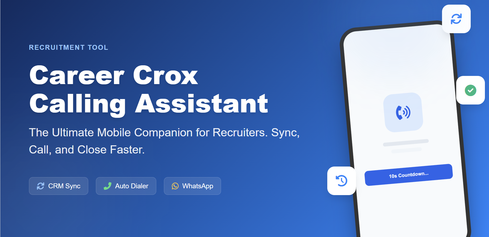

Transform your recruitment workflow with automated dialing, real-time CRM synchronization, and intelligent performance tracking. The ultimate mobile companion for high-volume recruitment professionals using Career Crox CRM.
Engineered for speed, consistency, and automated recruiter record-keeping.
Automated dialing queue with configurable 10-second preparation countdowns between calls. Dual mode control lets recruiters pause or resume either from mobile or remotely via the desktop CRM.
Synchronize your candidate call list with a single tap. All call outcomes, timestamps, incoming/missed history, and notes automatically flow back to the CRM database.
Monitor real-time stats including total Dialed, Connected, and Not Connected calls. Automatically calculates Average Handling Time (AHT) to maintain recruitment quality benchmarks.
Upload candidate resumes (PDF, Word, Images) directly from your phone to the CRM. Seamlessly attach call audio recordings to candidate profiles for interview audits.
Initiate WhatsApp conversations instantly without saving phone numbers to your device. Post-call presets (Interested, Busy, Call Back) allow rapid note logging.
Pair your Android phone securely with the Career Crox CRM using a 6-digit code. Features session validation, remote logout, and enterprise-grade authentication.
Connect your mobile device to your recruitment CRM in seconds.
Open the app and enter the 6-digit pairing code generated by your Career Crox CRM web dashboard.
Once paired, tap the "Sync" button to pull your assigned candidate list and priority tasks from the CRM.
Hit "Start Calling". The app will navigate through your queue, initiating calls with smart cooldowns in between.
Upload resumes, link call recordings, and update candidate statuses directly from the post-call interface.